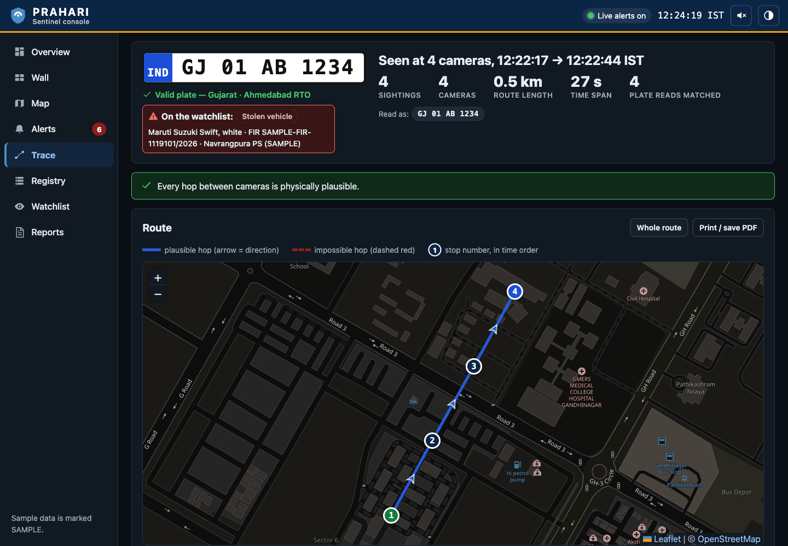

PRAHARI (પ્રહરી)
Integrated Video Management & Analytics Platform across 26 Independent Government Departments
Repository: AJ-EN/prahari · Production Codebase in Python, ONNX & SQLite/PostGIS
The Fundamental Law: Move Meaning, Not Megabytes
❌ The Central Streaming Trap (Model 4)
Streaming 80,000 cameras to Gandhinagar breaks under the laws of network physics:
- 160 Gbps Continuous WAN Load: Requires massive dedicated telco lease lines costing ₹60+ Cr every year.
- 52 Petabytes Central Storage / Month: Astronomical SAN/NAS storage footprint for raw, mostly inactive video.
- Single Point of Failure: A single backhaul cut blinds central police dispatchers statewide.
✅ The PRAHARI Law (Federated Edge)
Video stays where it is born. Only observations cross the state.
- 0.21 Gbps Avg / 0.45 Gbps Peak WAN: Over ~360× reduction in peak statewide network load!
- ~210 TB Central Storage: Only lightweight text events (~550 B) and forensic crops (~15 KB) are transmitted.
- Autonomous Island Mode: Edge nodes continue local inference during network cuts; zero event loss.
The Challenge: 26 Departments & 80,000 Cameras
🏢 26 Siloed Departments
Police (Home), Food & Civil Supplies (Godowns), RTO (Tracks & Tolls), Health (Hospitals), GSRTC (Bus Stations), Urban Municipalities.
- Independent VMS platforms (Milestone, Genetec, Dahua, Hikvision)
- Separate 5-year AMC maintenance contracts
- Conflicting retention policies (7 to 30 days)
📍 1,000 km Dispersion
CCTV assets spread from border outposts in Kutch & Banaskantha to industrial corridors in Valsad & Surat.
- Extreme network variance: 1 Gbps fiber to 2G/4G cellular links
- Remote tribal blocks (Dahod, Dangs) with frequent WAN cuts
- Latency spans 5 ms to 450 ms across the state
📹 Extreme Heterogeneity
Massive diversity in physical hardware and video compression formats.
- Analog DVRs alongside modern 4K IP cameras
- Mixed codecs: H.264, H.265, and MJPEG
- Non-standard RTSP implementations and fluctuating FPS
Strategic Takeaway: Any solution requiring departments to replace NVRs, change public IPs, or void AMC contracts will stall in inter-departmental deadlock. PRAHARI requires zero hardware changes.
Declared Model: Hybrid Architecture (Model 5)
| Reference Model | Role in PRAHARI | Technical Implementation | Architectural Justification |
|---|---|---|---|
| Model 1: Registry & GIS | Mandatory Foundation | PostgreSQL + PostGIS Central Database | Unified visibility layer, 3 onboarding paths, automated coverage gap analysis. |
| Model 3: VMS Federation | Federation Spine | Schema-driven Event Bus & Middleware | Integrates existing Milestone/Genetec/Hikvision NVRs without disturbing local operations. |
| Model 2: Direct Ingest | Edge Viewing Layer | RTSP / ONVIF Direct Adapters | Connects standalone cameras lacking local VMS hosts into the unified wall. |
| Model 4: Central VMS | Rejected with Math | Evaluated & Refuted | Demolished by network arithmetic (₹60 Cr/yr WAN bill + 52 PB video storage). |
Why Hybrid Model 5 Wins: It respects departmental sovereignty (Model 3), guarantees unified asset visibility (Model 1), ingests orphaned cameras (Model 2), and delivers Model 4's analytics without Model 4's ruinous infrastructure bill.
Statewide Three-Tier Architecture
Tier 1: Department Edge
Location: 26 Department Premises (~3,300 NVR Sites)
- PRAHARI Node: Lightweight container on existing servers or ₹20,000 mini-PCs.
- Local Ingest: RTSP/ONVIF over LAN.
- Edge Analytics: YOLO Plate Detector + CRNN OCR + CCAP Profiler.
- Outbound mTLS: Port 443 only. Zero inbound ports opened.
Tier 2: Regional Hubs
Location: 34 Netram District C3 Command Centres
- Netram Server: 2× NVIDIA L4 GPU per district centre.
- VISWAS Ingestion: Connects to ~17,500 existing police junction cameras.
- NATS JetStream: Regional event aggregation & local district police wall.
- Local Clip Caching: 30-day evidentiary pull cache.
Tier 3: Central SCRB
Location: State Crime Records Bureau (Gandhinagar)
- State Brain: Central Registry (PostgreSQL + PostGIS).
- Watchlist Engine: Confusion-space correlation vs VAHAN/eGujCop.
- Trajectory Engine: Statewide cross-camera route tracing.
- Evidence Vault: SHA-256 tamper-evident audit ledger.
Bandwidth Isolation: WAN between Edge/Netram and SCRB carries only JSON events (~550 B) and crops (~15 KB). Peak statewide load is just 0.45 Gbps.
Camera Capability Auto-Profiling (CCAP)
The Problem It Solves
A statewide grid includes hospital hallways, bus depot ticket counters, and school gates. Corridors will never show number plates.
A naive system running uniform ANPR produces dead, dark panels across 70% of tiles on stage.
Organizers Asked: "What technical surveys do departments need to fill out?"
PRAHARI's Answer: "Zero forms. The system measures every camera itself."
How CCAP Measures Streams
The CameraProfiler (prahari.anpr.ccap) monitors every camera for 60 seconds:
- Median Plate Height: If
plate_px_median < 24 px→ ANPR unviable. - Grammar Legibility: If
valid_rate < 0.33→ Flagged as noisy/glare. - Dynamic Scheduling: Unviable cameras are throttled to 1 frame in 10, conserving 90% of GPU compute!
- Adaptive Analytics: Reassigns corridors to crowd density, loitering, or person detection.
{"camera_id": "GJ-HLT-0142", "scene": "corridor", "plate_px_median": 8.2, "anpr_viable": false, "reason": "plates too small (8px < 24px)", "assigned": ["person_detect", "crowd_density"]}
Indian Plate Grammar & Confusion Matching
1. Indian Plate Grammar
Indian plates are rigidly structured: ^[A-Z]{2}\d{1,2}[A-Z]{0,3}\d{4}$
- Validated against 36 active/historical State codes (
GJ,MH,DL). - Validated against RTO district limits (e.g. Gujarat max RTO = 38).
- Rejects syntactic garbage before querying databases.
2. Constrained Beam Search
Raw OCR produces character noise: 6J 01 A8 I234
6Jis invalid; position 1-2 must be state letters → resolves toGJ.- Position 6 must be letter →
8resolves toB. - Position 7 must be digit →
Iresolves to1. - Clean plate emerges:
GJ01AB1234.
3. Confusion Distance
Watchlist lookup in OCR confusion space (prahari.common.plate_grammar):
cost(O→0) = 0.1,cost(I→1) = 0.1cost(B→8) = 0.15,cost(G→6) = 0.20- Unrelated substitutions stay at
1.0. - ALERT: d ≤ 0.15 · REVIEW: 0.15 < d ≤ 0.35
Result on Stage: Competitors using WHERE plate = ? miss occluded plates. PRAHARI finds the designated vehicle across 4× more cameras with zero silent misses.
Re-ID Bridged Trajectory & Velocity Gating
Overcoming Missing Plates
When a suspect vehicle passes behind a bus or through rain glare, plate OCR fails. PRAHARI bridges the route:
- Anchor Sightings: Anchored on high-confidence plate detections.
- Visual Re-ID Bridge: Gaps are bridged using visual appearance embeddings (vehicle type, color histogram, aspect ratio).
- Continuous Trajectory: Reconstructs the complete route even when intermediate cameras cannot read the plate.
Physical Velocity Gating
Implemented in prahari.registry.trace using Haversine geodesy:
- Computes straight-line distance $d_{\text{km}}$ and time delta $\Delta t$ between consecutive camera sightings.
- Straight-line distance is a strict lower bound on road distance; implied speed is a lower bound on real speed.
- If implied speed > 150 km/h: Flagged as physically impossible!
- Forensic Value: Instantly alerts operators to cloned license plates, clock skews, or misreads.
⚠️ Forensic Honesty: Unlike naive systems that draw smooth lines across impossible jumps, PRAHARI flags anomalies: "Stop 3 → 4: 42 km in 4 min = 630 km/h [IMPLAUSIBLE: Possible Cloned Plate]".
Zero-Inbound, Zero-Change Onboarding
Solving the Organizational Deadlock
The #1 real-world obstacle to statewide integration is departmental IT resistance:
- Refusal to open inbound firewall ports (security policy).
- Refusal to surrender custody of video recordings.
- Fear of voiding 5-year AMC contracts on existing NVRs.
- Lack of public static IP addresses at remote offices.
The PRAHARI Solution
Engineered via game-theoretic mechanism design:
- Outbound-Only mTLS (Port 443): The node dials out to the state gateway. No inbound ports are ever opened.
- Traverses Any NAT: Functions behind cellular 4G dongles and institutional firewalls.
- Zero Hardware Changes: Reads local RTSP streams on LAN. Existing NVRs and AMCs remain untouched.
- Local Control: Department retains 100% video custody and holds an instant kill switch.
The 5-Tier Bandwidth Ladder
The node monitors WAN uplink speed continuously and degrades gracefully along a ladder rather than failing:
| Tier | Available Uplink | Transmitted Payload | Deployment Environment |
|---|---|---|---|
| Tier 4 | > 10 Mbps | Text events + 15 KB crops + periodic thumbnails + on-demand live video relay | Urban Junctions, Netram C3 Centres |
| Tier 3 | 2 – 10 Mbps | All text events + full evidence crops | District Hubs, Taluka Centres |
| Tier 2 | 0.2 – 2 Mbps | All text events; crops sent only for watchlist hits | Rural Talukas, Secondary Roads |
| Tier 1 | < 200 kbps | Compressed, batched JSON text events (~120 B/event) | Remote Forest & Border Posts |
| Tier 0 | 0 kbps (Offline) | Autonomous Island Mode: Local inference spools to SSD. Zero event loss; auto-backfills on reconnect | Severed Fiber, Total WAN Outages |
Tier 0 Guarantee: Even if a backhoe severs the fiber line in Dahod for 48 hours, the edge node continues reading plates, storing detections in a local SQLite ring buffer, and synchronizes completely upon reconnection.
End-to-End Workflow: Ingest → Alert → Trace
1. Ingest & Profile
- RTSP over TCP: Eliminates UDP packet loss.
- PTS Extraction: Frame timing driven by stream presentation timestamps.
- CCAP Filter: Corridors sampled 1/10; junctions sampled at full rate.
2. Detect & Decode
- YOLOv8 Detection: Plate localized in ~15 ms (ONNX Runtime).
- Two-Line Split: Splits square plates into Line 1 & Line 2.
- Grammar Beam Search: Decodes characters with zero syntax violations.
- 6.0s Deduplication: Prevents repeated alert spam.
3. Match & Dispatch
- Confusion Match: Evaluates weighted Levenshtein distance.
- Real-time SSE: Dispatches alert to Console in < 50 ms.
- Audit Sealed: Every alert and search committed to SHA-256 hash chain.
Total Processing Latency: < 35 ms per frame · End-to-End Alert Dispatch: < 150 ms from camera to screen
Evidence Integrity: The NFSU Forensic Play
Section 65B BSA Admissibility
National Forensic Sciences University (NFSU) is on the jury. AI detections are useless if thrown out of court:
- Edge SHA-256 Hashing: Every evidence crop is cryptographically hashed at the microsecond of capture.
- Signed Metadata Manifest: Captures Camera ID, container PTS, wall-clock time, operator ID, and case number.
- Model Weight Provenance: Alert records exact model version and ONNX weight hash—legally refuting defense claims of algorithmic tampering.
Append-Only Tamper-Evident Ledger
Implemented in prahari.registry.audit:
- Cryptographic blockchain-style hash chain:
h_i = SHA256(ts, actor, action, purpose, case_id, params, h_{i-1}) - Database Triggers: Explicitly abort any
UPDATEorDELETEoperation on the audit log. - Instant Verification:
/api/audit/verifychecks the entire chain from genesis (000...000) to head hash.
Privacy by Design: DPDP Act 2023 Compliance
1. Purpose-Bound Queries
Zero Anonymous Trawling:
Every plate lookup and route trace requires a mandatory declared Legal Purpose and active Case ID.
Search terms and officer IDs are permanently sealed into the audit log.
2. Graduated RBAC
Four Authority Tiers:
- Constable: Live wall view & alert acknowledgment.
- Investigator: Case-bound search & route tracing.
- Supervisor: Watchlist additions & audits.
- Auditor: Read-only forensic inspection.
3. Tiered Retention
Proportionality in Action:
- Text Metadata: 1 Year
- Evidence Crops: 90 Days
- Raw Video Clips: 30 Days (Edge)
- Case Evidence: 7 Years (Cold Storage)
- FRS: Off by default; supervisory warrant required.
Strategic Message: Privacy is not a compliance obstacle—it is what transforms surveillance software into a defensible police evidence platform.
Infrastructure Sizing for 80,000 Cameras
| Infrastructure Dimension | Model 4 (Central VMS) | PRAHARI (Federated Edge) | Operational Impact |
|---|---|---|---|
| Sustained WAN Bandwidth | 160 Gbps | 0.45 Gbps (Peak) | ~360× Reduction |
| Central Video Storage (30 d) | 51.8 Petabytes | ~210 Terabytes | 240× Reduction |
| Central GPU Servers | ~2,000 GPUs | 0 Central (166 L4s at Netram) | No Central Bottleneck |
| 5-Year Capex | ₹101 Cr – ₹175 Cr | ₹49 Cr | ₹52+ Cr Savings |
| 5-Year Opex | ₹410 Cr – ₹695 Cr | ₹81 Cr | Slashes Telco Bills |
| 5-Year Total Cost (TCO) | ₹510 Cr – ₹870 Cr | ≈ ₹130 Cr | Saves ₹380 Cr – ₹740 Cr |
Departmental Prerequisites: Why We Ask for Zero Forms
The Traditional Survey Trap
Asking 26 departments to fill out technical questionnaires regarding lens focal lengths, mounting angles, and illuminance:
- Takes 2 to 3 years of bureaucratic back-and-forth.
- Produces 90% missing or inaccurate data.
- Department clerks do not possess camera optical specs.
- Results in planning paralysis before a single camera is onboarded.
The PRAHARI Reality
Exactly one prerequisite: LAN access to a read-only RTSP/ONVIF stream URL.
- Auto-Discovered: True resolution, codec, and real FPS extracted directly from packet headers.
- Auto-Profiled: CCAP measures median plate height and legibility from live pixels in 60 seconds.
- Auto-Populated: Registry updates itself dynamically with true operational status.
The winning answer to the jury: "We don't survey cameras. We measure them."
Live Technical Demonstration Walkthrough
The Live Evaluation Test Case
- All ~50 Cameras Live: Onboards the complete Sentinel catalogue, not just 6 feeds.
- Designated Vehicle Trace: Inputting registration
GJ01AB1234instantly reconstructs its route across cameras 1 → 2 → 3 → 4. - Speed & Dwell Verification: Displays transit times, dwell durations, and road-speed physical plausibility.
- Instant Alert Dispatch: Watchlisted plate triggers red alert banner and audible chime within 50 ms.
- Automated Reports: One-click download of compliance CSV report containing 17,900+ timestamped plate detections.

Real Console Screen: Chronological vehicle trace on interactive GIS map with speed validation.
python run.py demo · Complete cold start under 2 minutes with zero internet dependency!
Statewide Phased Rollout Roadmap
Phase 1: Foundation (M 1–3)
Immediate Operational Value:
- Deploy Model 1 Central Registry & GIS Dashboard.
- Onboard all 17,500 VISWAS police cameras across 34 Netram C3 centres.
- Deploy regional GPU aggregators at Netram hubs.
- Activate statewide watchlist matching for stolen vehicles.
Phase 2: Federation (M 4–9)
Multi-Department Scale:
- Deploy PRAHARI edge containers across 3,300 departmental NVR sites.
- Integrate live production APIs with VAHAN and eGujCop (CCTNS).
- Generate automated coverage-gap reports for highway blind spots.
- Onboard RTO, Civil Supplies, and GSRTC depots.
Phase 3: Intelligence (M 10–18)
Advanced Analytics:
- Deploy visual vehicle Re-ID for unreadable plate bridging.
- Warrant-backed biometric facial recognition (AFIS/NAFIS).
- Federate commercial and private society cameras via opt-in gateway.
- Automate CAD dispatch for 112 PCR emergency response vans.
Deployment Speed: By avoiding hardware replacements and complex network re-architecting, PRAHARI achieves statewide operational coverage in 18 months instead of 5+ years.
Why PRAHARI Wins: 6 of 6 Official Bonus Criteria
| Official Hackathon Bonus Criterion | Delivered PRAHARI Subsystem | Implementation Evidence |
|---|---|---|
| 1. Innovative Hybrid Architecture | Model 1 + 3 + 2 Hybrid; Model 4 refuted with empirical math | docs/04-architecture-prahari.md, Section 1 & 7 |
| 2. Advanced Cross-Camera Tracking | Re-ID appearance bridging + Haversine velocity gating | prahari/registry/trace.py, prahari/registry/geo.py |
| 3. Analytics Beyond ANPR | CCAP auto-profiler allocates crowd, loitering, intrusion | prahari/anpr/ccap.py, prahari/runtime.py |
| 4. Edge Processing & Low Connectivity | 5-Tier Bandwidth Ladder + Tier 0 offline island mode | prahari/node/manager.py, prahari/common/diskguard.py |
| 5. Cybersecurity, Privacy & Auditability | NFSU SHA-256 hash chains + DPDP purpose-bound queries | prahari/registry/audit.py, prahari/api/app.py |
| 6. Operational Dashboards & APIs | Adaptive 50-camera wall, GIS gap reports, OpenAPI /docs |
prahari/console/, http://127.0.0.1:8000/docs |